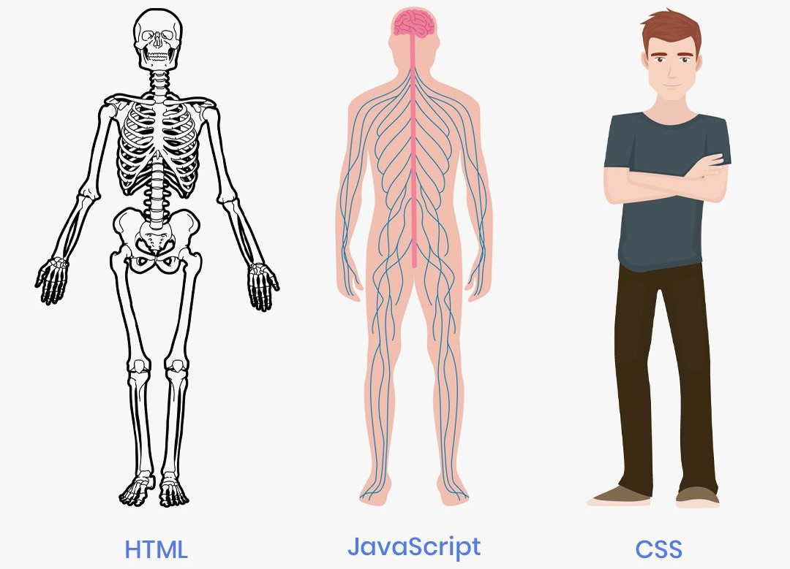
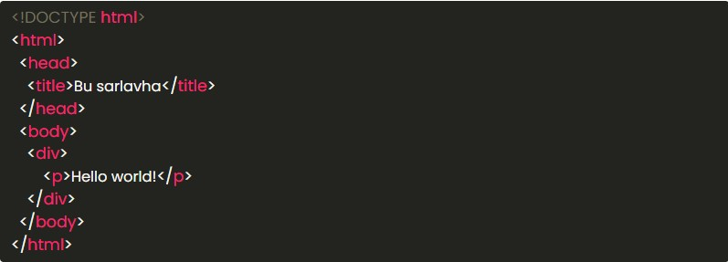

HTML o'zi nima? HTMLning kelib chiqish tarixiga nazar.
HyperText Markup Language yoki oddiyroq qilib aytganda HTML bu veb-brauzerda ko'rsatish
uchun mo'ljallangan hujjatlar uchun standart belgilash tilidir. Bu til Cascading Style Sheets (CSS)
kabi texnologiyalar va JavaScript kabi skript tillari bilan birga qo'llanilinadi. Agarda inson misolida
qaraydigan bo'lsak HTMLni inson skeleti deb qarasak bo'ladi, CSSni esa insonning tashqi ko'rinishi
(teri, ko'z, soch, qosh va hokazo...) deb olsak bo'ladi va JavaScriptni esa insonning miyyasi, nerv
sistemasi va yashashi uchun zarur bo'lgan boshqa barcha organlari sifatida qarasak bo'ladi.

HTML TARIXI:
HTMLtili taxminan 1991—1992-yillarda Yevropa Yadroviy Tadqiqotlar Markazida ishlovchi britaniyalik
mutaxassis Tim Berners-Lee tomonidan ishlab chiqilgan. Dastlab bu til mutaxassislar uchun hujjat
tayyorlash vositasi sifatida yaratilgan. HTML tilining soddaligi (SGMLga nisbatan) va yuqori
formatlash imkoniyatlarining mavjudligi uni foydalanuvchilar orasida tez tarqalishiga sabab boʻldi.
Bundan tashqari unda hipermatnlardan foydalanish mumkin edi. Tilning rivojlanishi bilan unga
qoʻshimcha multimedia (tasvir, tovush, animatsiya va boshqalar) imkoniyatlari qoʻshildi.
sintaksis:

imkoniyatlari
HTML quyidagi formatlash imkoniyatlariga ega
Matn qismining mantiqiy rolini belgilash (matn sarlavhasi, paragraf, roʻyxat va hokazo).
Hipermatnlar yaratish. Bu ayniqsa juda qulay boʻlib oʻzaro bogʻlangan hujjat sahifalari orasida
navigatsiya qilishni yengillashtiradi.
Matnning rangi, qalinligi va boshqa shrift koʻrsatkichlarini belgilash.
Maxsus belgilar qoʻyish. ASCII kodirovkasida koʻrsatilmagan belgilar HTML vositalari bilan qoʻyish
mumkin. Masalan grek alfaviti belgilari α,ψ, ζ, matematik belgilar ∫, ∞, √, ½, ¼ , ¾, moliya belgilari
€, £, ¥, ©, ®, ™ va hokazolar.
Foydalanuvchi kiritishi uchun maydonlar yaratish.
Multimedia fayllarini ochish.
Boshqa imkoniyatlar...
Versiyalari
HTML (1991)
HTML (1991)
HTML (1991)
HTML (1991)
HTML (1991)
HTML (1991)
HTML (1991)
Malumot
https://uz.wikipedia.org/wiki/HTML